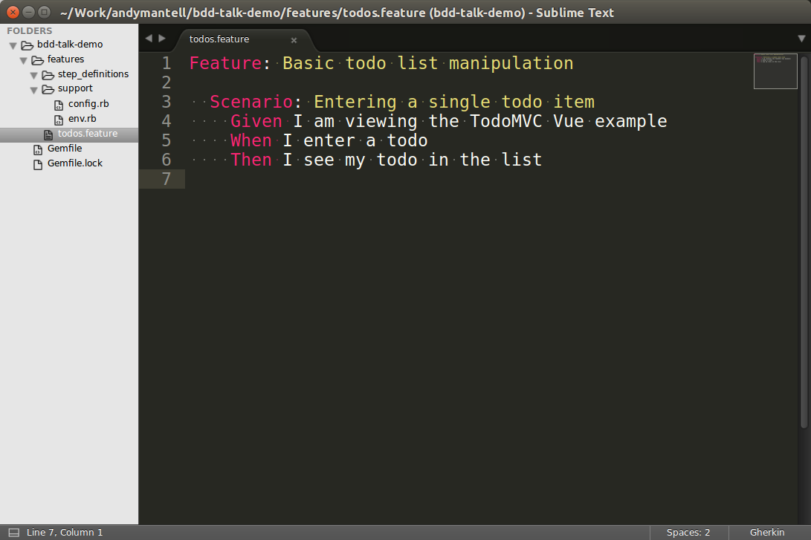
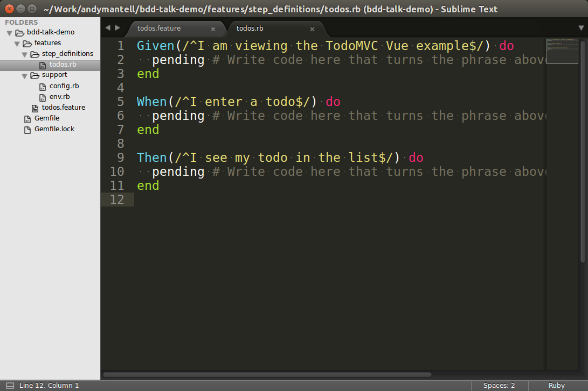
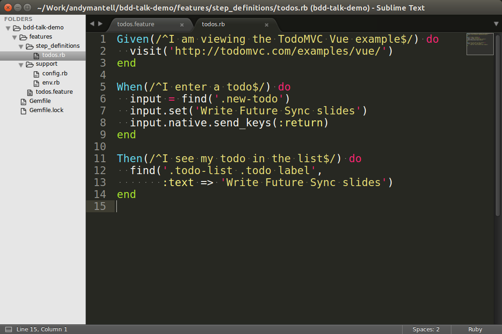
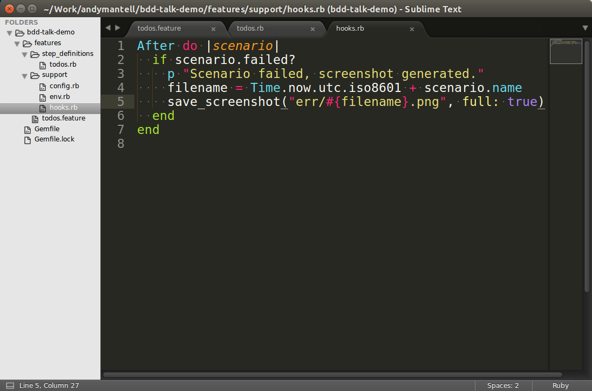
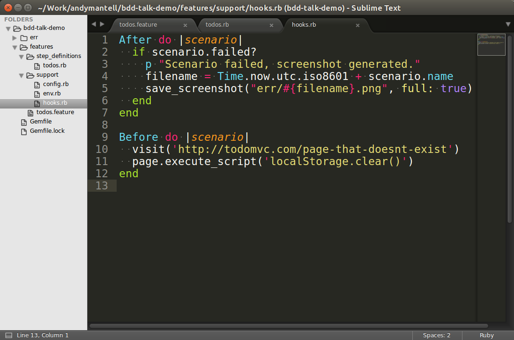
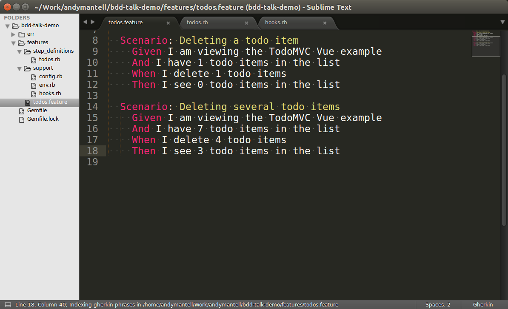
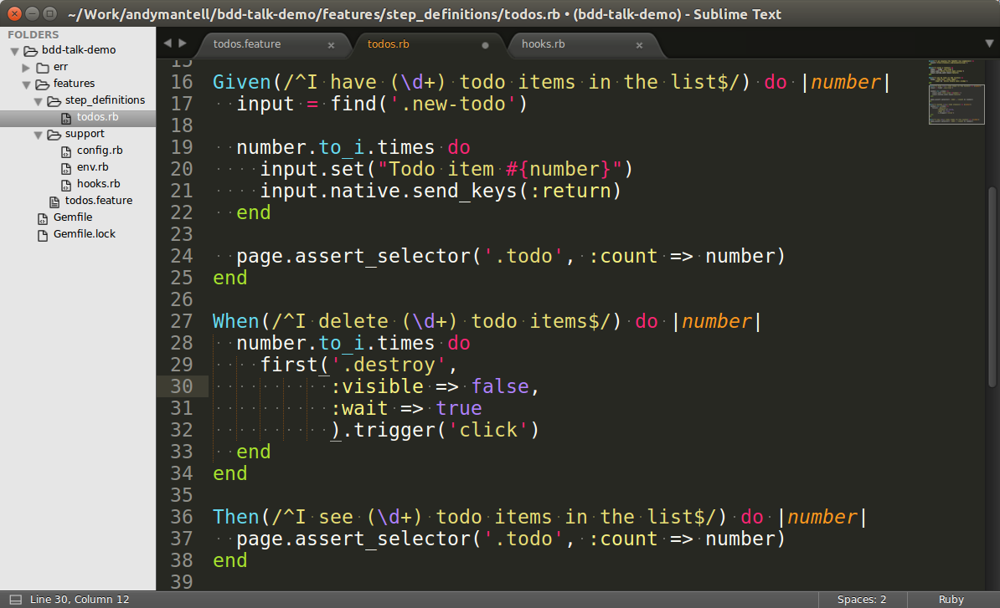
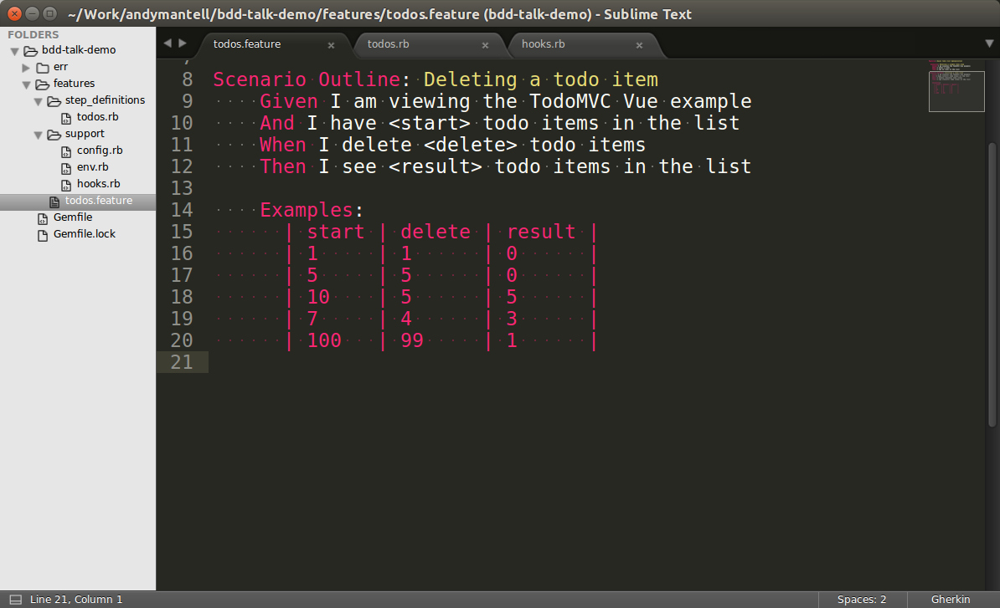

class: center, middle # Behaviour Driven Development ## Brought to you today by Gherkins, Cucumbers and an enormous Guinea pig <br><br> Andy Mantell - Contract frontend developer<br> (@andymantell) --- # What is BDD? Behaviour Driven Development An extension of Test Driven Development Where TDD tends to be extremely technical and the sole preserve of developers, BDD tries to bring together the business requirements (Maybe it's your product owner, or a stakeholder) and the tester/developer. --- # What is BDD? The principle is that the behaviour of the system is defined and agreed up front in a Domain Specific Language. The developer then builds the functionality in the system. The behaviour specification is then turned into an automated test suite. (The order of the above may vary slightly) In order to achieve this, BDD is supported by a set of languages and tools to define the behaviours and to run the tests --- # BDD tooling There are a variety of tools available, but today I'm going to cover: - Gherkin (The language in which the scenarios are defined) - Cucumber (A tool to map these scenarios to test steps) - Capybara (A tool for driving a web browser in a test suite) --- <img src="assets/images/todomvc.png" alt="TodoMVC" style="width:100%"> --- # Setup ## Requirements Ruby, Bundler and PhantomJS installed on your system ## Setting up In a new folder, create a `Gemfile` containing the following: ```ruby source 'https://rubygems.org' gem 'cucumber' gem 'capybara' gem 'capybara-screenshot' gem 'poltergeist' ``` And type `bundle install` to install these dependencies (See http://bundler.io/) --- <video loop style="max-width: 80%" src="assets/images/init.ogv"></video> --- # Configure Capybara Create a new file as follows: `/features/support/config.rb` ```ruby require 'capybara/cucumber' require 'capybara/poltergeist' include Capybara::DSL Capybara.default_driver = :poltergeist Capybara.javascript_driver = :poltergeist ``` --- # Capybara! Now's a good time to `git commit -m "Initial commit"` <img src="assets/images/capybara.jpg" alt="Capybara" style="width: 100%"> --- # Gherkin scenario  --- # Pending step definitions <video loop style="max-width: 80%" src="assets/images/pending-steps.ogv"></video> --- # Step definitions  --- # Step definitions <video loop style="max-width: 80%" src="assets/images/empty-steps.ogv"></video> ---  --- <video loop style="max-width: 80%" src="assets/images/initial-test-run.ogv"></video> Green! --- <video loop style="max-width: 80%" src="assets/images/ambiguous-match.ogv"></video> ---  --- <img src="assets/images/2017-06-03T11:17:45ZEntering a single todo item.png" alt="Error screenshot" style="width: 100%"> ---  ---  ---  --- <video loop style="max-width: 80%" src="assets/images/parameterized-steps.ogv"></video> --- ### Scenario outlines --- ### Scenario outlines  --- ### Scenario outlines <video loop style="max-width: 80%" src="assets/images/scenario-outlines.ogv"></video> --- # Examples of other Capybara commands - `find` - finds an element based on a CSS selector or XPath - `fill_in` - fills in an input field - `click_link` - click a link - `click_button` - click a button - `assert_text` - Assert that some text appear on the screen And many more... http://www.rubydoc.info/github/jnicklas/capybara --- # Running as part of your CI pipeline Developers would run the test suite against their local builds before they push work. The next step would be to get it running in your CI pipeline, whether that be Jenkins, Travis, or whatever. Each time changes are pushed to your integration environment, the tests would then run and report any failures. --- # Benefits - Fantastic at ensuring your system is developed to meet the original requirements - And _continues to meet those requirements_ - The tests are executing in a real browser and behaving like real users --- # Other forms of testing It is _not_ a replacement for other forms of testing. If you've already got unit tests, integration tests, whatever - keep writing and running them! Having said that, if you're not doing any testing at all - it's not a bad place to start. --- # Pitfalls Writing scenarios can be quite tricky! It can be hard to write them in a clean and friendly way whilst also making them map nicely to step definitions. They are best written by a developer _and_ someone from elsewhere in the business. Not one or the other. ``` Example of bad scenario here ``` --- # Pitfalls Testing via a headless browser can sometimes be unstable. For example, if your page moves while Capybara is interacting with it, it might fail to click a button correctly. One case would be animations and transitions. We can get round this with a little snippet of JavaScript which we pass to the web browser via the tests. This forcibly disables css transitions. If you were using jQuery animations, you could also set `jQuery.fx.off = true`. ```js (function() { document.addEventListener('DOMContentLoaded', function() { var style = document.createElement('style') style.textContent = '* { -webkit-transition: none!important;transition:none!important}' document.body.appendChild(style) }); })() ``` --- # Pitfalls Tests are quite sensitive to content on the page. If your testing environment contains content from your live system which might be subject to change via a CMS, then you might find it difficult to test effectively without writing brittle tests. The best way round this is to write a script to load your testing environment up with consistent data. The theory is that the `Given` steps should set the system up into a known state such that your tests are stable. Sometimes it can be helpful to write a script which runs before the test suite (For example, each time your test environment is rebuilt) and sets the data up up front to keep the tests themselves performant. --- # Pitfalls Be careful with XPath! The default selector for Capybara is CSS, but it used to be XPath and I see many people still using it as the default. However, I often see this: ```/html/body/main/div[2]/div/form/input[2]``` This is incredibly brittle - if someone changes the HTML they could easily break hundreds of tests in one fell swoop. TL;DR - don't use XPath! --- # Don't use XPath! _Unless you really mean it..._ ```ruby summary = find('summary', :text => 'What does Caution mean?') summary.click details = summary.find(:xpath, '..') details.all('.panel p', :minimum => 1) ``` XPath can look _up_ the DOM tree with a `..` And across it, with `preceding-sibling::*` or `following-sibling::*` Whereas CSS can only really look _down_ the tree. It's extremely powerful, but you probably don't need it most of the time. Use CSS selectors, or if you must use XPath - at least write _sensible_ XPath. ```//*[@id="search_button"]``` --- ## Links - These slides: https://andymantell.github.io/bdd-talk/ - Example test suite from the slides: https://github.com/andymantell/bdd-talk-example( - https://github.com/teamcapybara/capybara and http://www.rubydoc.info/github/jnicklas/capybara <br><br><br> ## Questions?